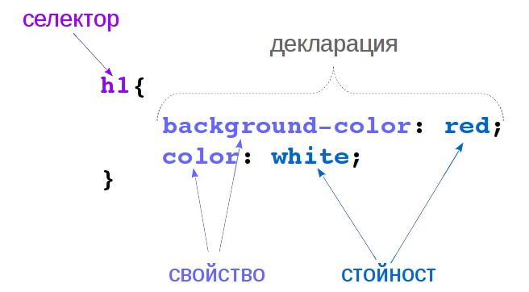
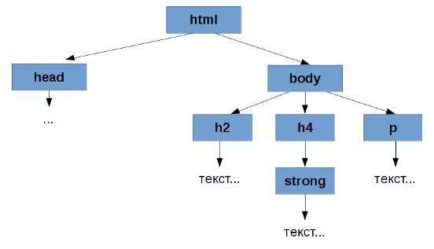
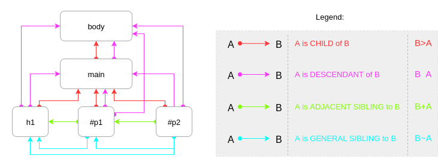
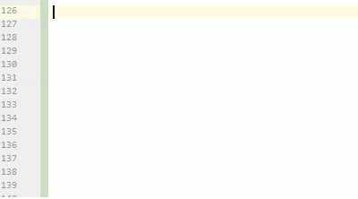

___PresentationTitile___
Created for
Created by
Какво е CSS?
- CSSCascadingStyleSheets
- Съвкупност от форматиращи препоръки, правила, които указват КАК да се представи документа от браузера.
- Първа версия: Декември, 1996
Cascading? Sheets?
Комбиниране (каскадно) на различни стилови шаблони.

Защо CSS?
Как изглеждаха Уеб страниците преди CSS:
Разделяне на отговорности (Separation of concernrs)
- HTML:
- Съдържанието на документа.
- КАКВО ще се изобрази.
- Структура и семантика на елементите.
- CSS:
- Оформлението на документа.
- КАК ще се изобрази.
- Форматиране и подреждане на елементите
Преносимост на документа между различните видове медии: екран (PC, tablet, phones, ...), принтер, проектор, аудио браузер, и пр.)
- Keep DRY (Don't Repeat Yourself)
Структуриран, концентриран единствено върху съдържанието, четим HTML код.
<body bgcolor="#000000">
<div border="1" bordercolor="red">
<p><font face="verdana" color="blue"> Това е параграф оцветен в синьо !</font></p>
</div>
</body>
VS.
<head>
<link rel="stylesheet" type="text/css" href="main.css">
</head>
<body>
<div>
<p>Това е параграф оцветен в синьо !</p>
</div>
</body>
Какво можем да правим със CSS?
Просто разгледайте тук: "CSS only" Pens in Codepen
Как?
Inline CSS
Чрез атрибутa style за всеки един HTML елемент:
<tag style="[property:value;]+">
Например:
<p style="color:green;">текст в зелено</p>
Предимства? Недостатъци?
Internal CSS
В HEAD секцията, в ‘style’ елемента:
<head>
<style type=”text/css”>
p {
text-indent:5%;
color : gray;
}
h2 {
text-indent:15%;
font-size: 1.5em;
color : red;
}
</style>
</head>
Предимства? Недостатъци?
External CSS
Чрез дефиниране на CSS правилата в отделен файл ( *.css ). Свързва се с документа посредством елемента link в заглавната част на документа:
<head>
<link rel="stylesheet" type="text/css" href="css/basic.css" >
</head>
NB! Атрибута type може да се пропуска, тъй като в HTML5 се подразбира type="text/css"
Предимства? Недостатъци?
CSS правила - синтаксис
Общ синтаксис на едно CSS правило:
selector {
property1: value1;
property2: value2;
...
}
Пример:
h1{
background-color: red;
color: white;
}
Общ синтаксис на едно CSS правило:
Селекторите могат да се групират - отделят се със запетайка
h2,h4 {
color: white;
}
Декларациите също могат да се групират – отделят се с точка и запетая ‘ ; ’
h4 {
background-color: red;
color: white;
border: 5px solid gray;
}
' ; ' след последна декларация не е задължителна, но е добра практика да се поставя винаги – улеснява редактирането на кода.
Пример
БялоЗеленоЧервено
.flag{
display: inline-block;
line-height: 2em;
width: 20em;
border: .2em solid #333;
}
.flag>span{
display: block;
}
.bg>span:nth-child(1){
background: white;
color: #CCC;
}
.bg>span:nth-child(2){
background: green;
color: #CCC;
}
.bg>span:nth-child(3){
background: red;
color: #CCC;
}
Коментари в CSS
/*- за начало на коментар*/- за край на коментар
Пример:
/*~~~~~~~~~~~~~~~~~~~~~~~~~~~~~~~~~~~~
Пример за многоредов коментар
~~~~~~~~~~~~~~~~~~~~~~~~~~~~~~~~~~~~~*/
/*Main_Sections_Title*/
section>h2{
font-size: 1em;
-webkit-border-radius: 12px; /* Safari 3-4 */
-moz-border-radius: 12px; /* Firefox 3.6 and below */
border-radius: 12px; /* modern browsers */
/*background: red;*/
}
Каскадност на CSS правилата
Специфичност (specificity)
Наследяване (inheritance)
Местоположение (location)
Специфичност (specificity)
Определя се от типа на селектора - колкото по-специфичен е един селектор, с толкова по-висок приоритет ще бъде той.
(ще разгледаме подробно в темата за CSS селектори)
Наследяване (inheritance)
Дървовидна структура на HTML документ
Наследяване (inheritance)
Някои CSS свойства се наследяват от елементи-родители в HTML дървото
Такива са повечето свойства за оформление на текст, които ще бъдат разгледани по-детайлно в следващите теми.
Наследяване (inheritance) - пример
body{
/*Всички елементи в body, ще се изобразят с черен шрифт*/
color: black;
}
/*Всички елементи в div, ще се изобразят с бял шрифт върху червен фон*/
div{
color: white;
background-color: red;
}
Наследяване (inheritance) - primer
Не всички свойства се наследяват!
Експериментирайте със следния код:
body{
background-color: lightblue;
color: black;
}
div{
background-color: red;
color: white;
/*забележете дали свойството border се наследява, така както color*/
border: 5px solid green;
}
Заглавие
текст в параграф...
- Елемент1
- Елемент2
- Елемент3
друг параграф...
Местоположение (location): rule of thumbs
Колкото по-близо до даден елемент е дефинирано правилото касаещо неговото оформление, толкова по-висок приоритет ще има това правило
Местоположение (location): official rule
- Стил, прилаган от Браузера.
- Потребителски стил на Браузера (“reader/user style sheet”)
- Стил, зададен в HEAD секцията:
- Външен стил, свързан със документа чрез елемента link.
- Импортиран стил в документа, добавен чрез @import правилото)
- Вграден в документа стил (Embedded style sheets) чрез елемента style
- Инлайн стил, добавен към елемент чрез атрибута му style в отварящия таг
- Правило, маркирано като !important от автора на страницата.
- Правило, маркирано като !important от потребителя
Местоположение (location) - пример
p{
color: blue;
}
<!DOCTYPE html>
<html>
<head>
<title>CSS_cascade_location_rule</title>
<style type="text/css" media="screen">
p{
color: red;
}
</style>
<!-- тъй като включваме CSS файла след style елемента, то правилата в него ще бъдат с приоритет -->
<link rel="stylesheet" type="text/css" href="CSS_cascade_location_rule.css">
</head>
<body>
<p>Paragraph 1</p>
<p style="color: green">Paragraph 2</p>
</body>
</html>
Какъв цвят ще бъде шрифта на всеки параграф?
Резултат...Пример за !important
p{
background: red !important;
color: white;
}
текст в параграф...
Как ще бъде оцветен параграфа и текста в него?
Резултат...Какво са CSS селекторите?
- Шаблони, които определят над кои HTML елементи ще се приложи зададеният стил в декларациите.
- Могат да бъдат съвсем прости, като '
*' или 'p' или доста по-сложни като:a[href^="https://"]:hover
Списък със всички дефинирани в стандарта (CSS1 – CSS3) селектори: css_selectors
В момента (2016) се разработва спецификацията
CSS Selectors Level 4
Селектори за елементи
Element (type) selectors
/* Всички параграфи в документа ще бъдат с червен шрифт */
p {
color: red;
}
Действие: селектира всички HTML елементи от дадения тип.
Универсален селектор (Universal selector)
* {
marging: 0;
padding: 0
}
Действие: селектира всички HTML елементи в документа.
Не се препоръчва да се използва, тъй като забавя обработката на страницата.
Универсален селектор - пример
<body>
<h1>Heading 1</h1>
<section><h2>Section 1 Heading</h2>
<p>Paragraph 1</p>
<p>Paragraph 2</p>
</section>
</body>
Селектори за class и id
Атрибутите: class и id
- class - можем да зададем един и същи клас на множество елементи в HTML. Така лесно можем да селектираме всички тях.
- id - само един елемент в документа може да има дадено id. T.e. чрез id селектираме само един елемент.
Параграф 1
Параграф 2
Параграф 3
Параграф 4
Параграф 5
Атрибутите: class и id
- Стойностите на атрибутите class и id, задължително започват с буква, след която може да има произволна съвкупност от букви, цифри, '_' и '-'.
- Можем да зададем няколко класа за един елемент, като ги разделяме със спейс.
- В атрибута id не можем да имаме спейс!
Параграф 3
Селектор за class
- Записва се с точка (".") последвана от стойност на class.
- Може да бъде специфициран допълнително, като пред него непосредствено се запише тип на елемент.
/* Селектира всички HTML елементи, които са дефинирали class="blue" */
.blue{
color: blue;
}
/* Селектира всички HTML елементи, от тип 'p', които са дефинирали class="red" */
p.red{
color: red;
}
Селектор за id
- Записва се с диез (хаш таг) - "#", последван от стойност на атрибута id.
- Тъй като с дадено id можем да обозначим само един единствен елемент от цялото HTML дърво, то е безсмислен записът с тип на елемент отпред.
- Например:
p#vip{...}няма смисъл и не се препоръчва да се използва.
/* Селектира елементът с id="main_title" */
#main_title{
color: red;
}
Пример
/* Селектира всички HTML елементи, които са дефинирали class="c1" */
.c1{
color: purple;
}
/* Селектира всички H1 елементи, които са дефинирали class="c1" */
h1.c1{
font-style: italic;
}
/* Селектор по id */
#vip{
color: #aa3333;
font-size: 2em;
text-shadow:
2px 2px #a000a0,
2px 2px #c000c0;
}
Purple Section:
Заглавие
Параграф
Под заглавие
Параграф
Параграф с id="vip"
CSS Комбинатори (CSS Combinators)
Чрез комбинаторите съставяме селектори, които отчитат позицията (контекста) на елементите в HTML дървото.
Видове HTML възли
- Родител (Parent)
- Дете (Child)
- Наследници (Descendants)
- Братя (Siblings)
Селекторите, чрез които можем да избираме елементи според позицията им в HTML дървото се образуват чрез комбинатори:
Комбинаторите, са символи, чрез които се задава връзка между селектори и така чрез тях се образува съставен селектор.
selector1<combinator>selector2
| Комбинатор | Селектор |
|---|---|
| ' ' (спейс) | parentSelector descendantsSelector |
| '>' | parentSelector > childrenSelector |
| '~' | previousSelector~generalSiblingSelector |
| '+' | previousSelector+adjacentSiblingSelector |
Видове HTML възли и съответстващи комбинатори - Диаграма
{kind=link}
Задача: опитайте да селектирате показаните елементи без да променяте HTML и без да гледате решението ;)
Siblings - Example
Parent Slector?
Поради съображения за сигурност/производителност, засега, не можем да селектираме елементи нагоре и в ляво по дървото. Поради това няма селектор за родител/предшественик.
Parent Slector ;)
awesome-new-css3-selectors ? - ако се зачетете в това, то моля прегледайте и коментарите в темата : ))))
Parent Slector?
Въпреки, че в черновата на Selectors Level 4 има специфициран :has селектор, то все още не е официално приет и не се поддържа от нито един браузер.
Parent Slector : )
The real reason behind the rejection of CSS parent selector
{kind=link}
Селектори за атрибути (Attribute Selectors)
Self-learning section
w3schools - CSS Attribute SelectorДават възможност да се селектират елементи с произволни атрибути и стойности за тях.
Пример:
Attribute selectors in codepenЗадачи за упражнение
Селектори за псевдо-класове
Какво са псевдо-класовете
- Определят състояние на елемент.
- Селектират целият елемент (за разлика от pseudo-elemements селекторите), но само когато елементът е в даденото състояние.
- Например :hover, определя елемент, когато е посочен от мишката.
- :first-child определя елемент, само когато е първият елемент в родителя си.
Hyperlinks Pseudo Classes - Пример
See the Pen link_pseudo_clases by Iva Popova (@webdesigncourse) on CodePen.
Употреба
- Чрез селекторите за псевдо-класове можем да селектираме елемент според неговото състояние.
- Общ синтаксис:
selector:pseudoclass {
property:value;
...
}
:link
- Селектира линк, който не е посетен от дадения браузер.
- Пример:
a:link{
color: green;
}
:visited
- Селектира линк, който вече е посетен от дадения браузер.
- Пример:
a:visited{
color: gray;
}
:visited - important note
- От съображения за сигурността на потребителя, върху посетените линкове могат да се прилагат само някои от CSS свойствата
- Това са: color, background-color, border-color, border-bottom-color, border-left-color, border-right-color, border-top-color, outline-color, column-rule-color, fill and stroke.
- Privacy and the :visited selector
:hover
- Селектира елемент, когато мишката се намира върху него.
:hoverможе да се прилага не само върху хиперлинкове, но и всички останали HTML елементи.- Пример:
a:hover{
border-bottom: 1px dotted #000;
}
:hover - кога няма да работи?
- Редът на записване на стилове за линкове има значение!
- За да се приложат правилно свойствата, трябва да подреждате CSS правилата за линкове, спазвайки следния ред:
- :link , :visited , :hover , :active
:hover - кога няма да работи? - пример
:hover и CSS комбинатори- примери
:hover - приложение
Pure CSS drop-down menu
:active
- Селектира елемент, когато щракнем с мишката върху елемента.
- Пример:
a:active{
font-size: 120%;
}
:focus
- Селектира елемент, когато елемента получи фокус.
- Прилага се само за елементи, чрез които потребителя може да взаимодейства - такива са input елементите на една форма, линковете, както и всички елементи с атрибут tabindex
- Пример:
a:focus{
font-weight: bold;
}
:active and tabindex demo
:nth-child(x)
- Селектира поредно дете, с индекс x, без значение на неговия тип.
- Индексът на децата започва от 1
- x може да бъде число, запазена дума или формула: an+b
- Записът
:nth-child(x)- се чете елемент/и (какъвто и да е), който е X-то дете - Записът
selector:nth-child(x)- се чете елемент/и, селектиран от selector, който е X-то дете
:nth-child(x) - example
:nth-child(an+b)
- Когато имаме
nth-child(an+b), n е брояч, който започва от нула и се увеличава с 1, автоматично - a и b са числа, които се задават от нас.
- Ако
an+b < 0, няма да се селектира нито един елемент (няма елемент с индекс -1, например) - Но е възможно да имаме минус пред n.Например:
/* селектира първите 3 параграфа */
p:nth-child(-n+3){
color: magenta;
}
:nth-child(an+b) - example
selector:nth-child(x) vs. :nth-child(x)
:nth-last-child(x)
- За да селектираме елементите в обратен ред (от последния към първия), се използва селектора nth-last-child()
- Например:
/* селектира параграф, ако е последно дете */
p:nth-last-child(1){
color: magenta;
}
Self-Learning Section (nth-of-type(an+b)
nth-of-type(an+b) at MDN
:nth-of-type(an+b)
Пример 1: nth-child() vs. nth-of-type()
See the Pen nth-child() vs. nth-of-type() by Iva Popova (@webdesigncourse) on CodePen.
Пример 2: nth-child() vs. nth-of-type()
See the Pen nth-child() vs. nth-of-type() 2 by Iva Popova (@webdesigncourse) on CodePen.
Често срещани проблеми: nth-child
:checked
- Селектира radio, checkbox или option елемент, когато елемента е избран от потребителя.
- Пример:
/* селектира всички елементи, когато те са маркирани от потребителя */
input[type="radio"]:checked{
width: 50px;
height: 50px;
}
Същата логика е приложима и за checkbox
:checked при стилизиране на радио-бутони
:checked - приложение за "hamburger menu" без JavaScript
Полезни ресурси:
Селектори за псевдо-елементи
Употреба
- Селектират част от елемент.
- Например първи ред от параграф (
p::first-line) - Чрез псевдо-елементи можем и да "вмъкваме" съдържание в началото (
div::before) или в края на даден елемент (div::after)
Общ синтаксис
selector::pseudoelement {
property:value;
...
}
В CSS3 разделителят за псевдо-елемент е :: за да се отличава от псевдо-клас. В предишните версии на CSS се използва само : за разделител. Но на практика работят и двата вида разделители.
::first-letter
- Селектира само първата буква от съдържанието на дадения елемент
p::first-letter{
font-size: 2em;
color: red;
}
::first-line
- Селектира само първият ред от съдържанието на дадения елемент.
p::first-line{
font-size: 2em;
color: red;
}
Размера на първия ред се определя динамично от браузера, в зависимост от големината на текста и вюпорта.
::first-line and ::first-letter examples
::before
- Вмъква анонимен заместван елемент като първо дете на селектирания елемент.
- Съдържанието на вмъкнатият елемент се задава чрез свойството
content, което е задължително да присъства
.myQuote::before{
content: '❝';
color: gray;
}
::after
- Вмъква анонимен заместван елемент като последно дете на селектирания елемент.
- Съдържанието на вмъкнатият елемент се задава чрез свойството
content
.myQuote::after{
content: '❞';
color: gray;
}
::before and ::after examples
Повече за content свойството
content property on MDNПримери за content свойството
Приложение за "изчистване" на float ефекта
Повече за float и clearfix: CSS-Tricks: Techniques for Clearing Floats
Още прмери за ::before/::after
CSS: :before and :after pseudo elements in practice - Krasimir Tsonev
Приложение на before/after + counter
Създаване на падащи менюта (вертикални и хоризонтални) от списък чрез CSS.
CSS drop-down menu - example 1
CSS drop-down menu with Float over content
Ресурси
Codepen Collection
Избрани видеа върху темата
These slides are based on
customized version of
framework